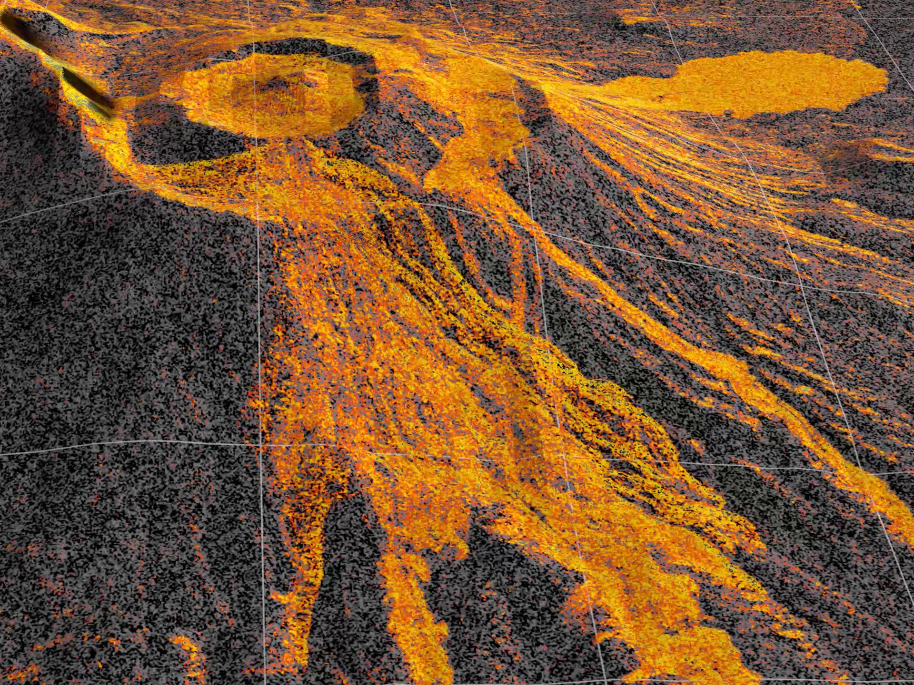
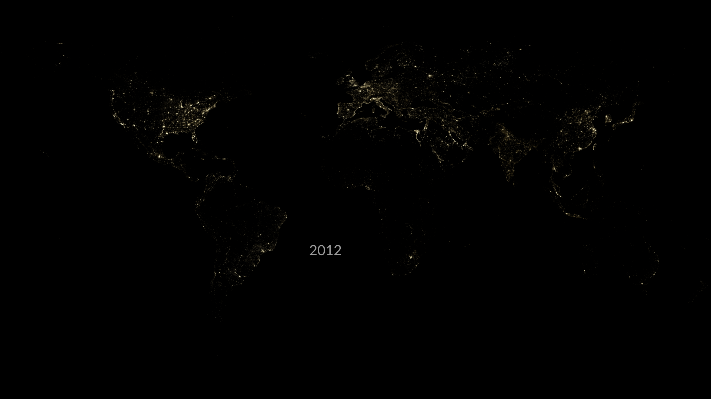
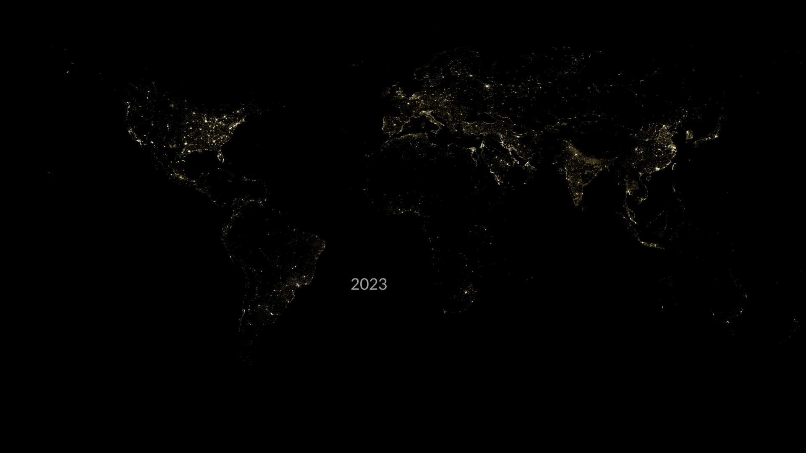

A
NASA visualization frame labelled Jun 18 2026
—
NASA Space Apps Challenge 2026 · The Earth Information Jukebox
Can you hear a lava field evolve?
NASA identifies the evolving bright field in the visualization as lava.
ECHO PROOF does not classify lava.
It translates fixed visual brightness-density measurements into sound
using the same deterministic rule for both dates.
Then test the same deterministic rule on NASA Night Lights.
Loading frozen assets…
—
—

What changed?
NASA describes an ongoing, steady eastward-flowing lava field at Krasheninnikov. Across the NISAR time-lapse, lava fills a smaller inner caldera, overflows into a wider crater, and widens into a fan. The Jun 18 and Jun 30 frames capture two moments in that continuing eruption.
Why does it sound different?
In NASA's radar visualization, lava appears lighter because microwaves reflect more brightly than from the surrounding surface. ECHO PROOF applies the same 6×4 grid and the same EP-MAP-1.0 rule to both dates: when bright-pixel density changes in a cell, its mapped tone frequency changes too.
ECHO PROOF measures visual brightness density; it does not classify pixels as lava.
Scientific context and visualization: NASA Scientific Visualization Studio · SVS 5675
NASA Black Marble Night Lights · Global annual averages · 2012 ↔ 2023
Loading frozen Night Lights assets…
—

—

Transfer receipt
No cell playing.
What changed?
The same 6×4 grid compares two NASA night-lights visualizations using the same deterministic brightness-density-to-frequency rule.
Why does it sound different?
When bright-pixel density changes in a cell, its mapped tone frequency changes too. Matched A/B places the same 2012 and 2023 cell back-to-back so small local differences are easier to hear.
ECHO PROOF measures visual brightness density. It does not infer population, economic activity, urban growth, physical radiance, or the cause of a lighting change.
Method transfer · NASA Night Lights
This secondary evidence applies the frozen EP-MAP-1.0 / NL-TRANSFER-1 rule to NASA Black Marble global annual-average visualizations for 2012 and 2023. No post-hoc tuning.
Secondary method-transfer evidence · Krasheninnikov remains PRIMARY.
Sources: NASA SVS 5313 (EIC reference) · NASA SVS 5276 (annual-series provenance) · Black Marble / Suomi NPP VIIRS
Translation Receipt
Primary translation receipt
Jun 18 2026 ↔ Jun 30 2026 · EP-MAP-1.0
No cell playing.
Y′ = 0.2126R + 0.7152G + 0.0722B
bright pixel if Y′ ≥ 128
p = bright pixels / cell pixels
frequency = 220 + 660 × p Hz
| Cell | Grid | p · Jun 18 | p · Jun 30 | Hz · Jun 18 | Hz · Jun 30 | Δ Hz | Pan |
|---|
Method-transfer translation receipt
2012 annual average ↔ 2023 annual average · EP-MAP-1.0 / NL-TRANSFER-1
No cell playing.
Y′ = 0.2126R + 0.7152G + 0.0722B
bright pixel if Y′ ≥ 128
p = bright pixels / cell pixels
frequency = 220 + 660 × p Hz
| Cell | Grid | p · 2012 | p · 2023 | Hz · 2012 | Hz · 2023 | Δ Hz | Pan |
|---|
Night Lights is secondary method-transfer evidence. Matched A/B perceptual result: PASS; full sequential A-vs-B remains weak.
Sources & boundaries
PRIMARY · Krasheninnikov
Frozen representative visualization frames: 426 (Jun 18 label) and 439 (Jun 30 label), cropped with the same fixed ROI: x 1440–3360, y 360–1800.
NASA provides the scientific interpretation of the evolving bright field as lava. ECHO PROOF does not detect or classify lava; it measures visual brightness density and maps that measurement to sound using EP-MAP-1.0.
METHOD TRANSFER · Night Lights
Challenge-Resources / EIC reference: NASA SVS 5313. Annual-series provenance: NASA SVS 5276, Black Marble / Suomi NPP VIIRS. The comparison uses the 2012 and 2023 global annual-average visualizations with the same deterministic rule and no post-hoc tuning.
This is secondary method-transfer evidence, not a second hero project. ECHO PROOF does not infer population, economic activity, urban growth, physical radiance, or the cause of a lighting change.
Mapping: EP-MAP-1.0 · Night Lights transfer identifier: NL-TRANSFER-1. The same disclosed brightness-density-to-frequency principle is used across both stories.